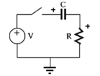
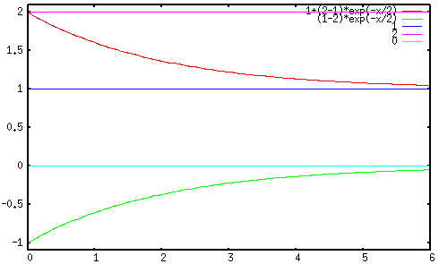
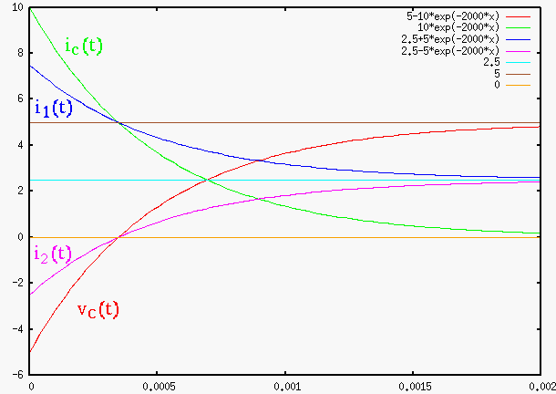
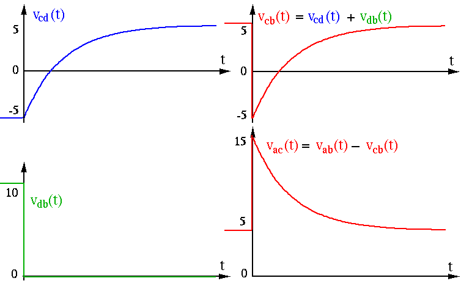
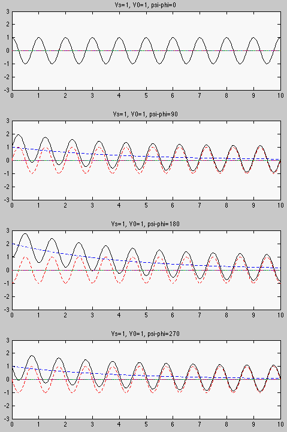
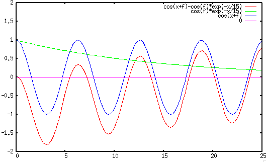
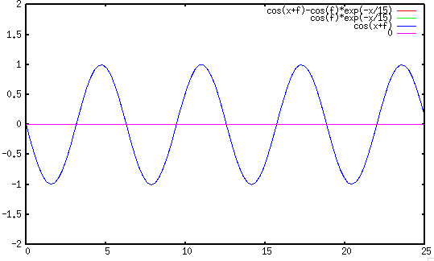
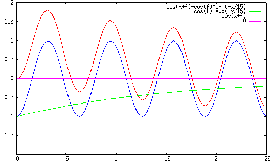
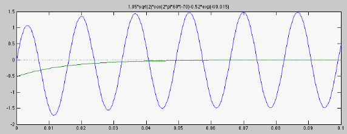

Next: Second Order RCL Circuit
Up: Chapter 3: AC Circuit
Previous: AC Circuit Analysis II
The complete response of a linear system due to the external input as well
as the initial condition can be found as the sum of the homogeneous and
particular solutions of the DE, which is no longer homogeneous, due to the
non-zero right-hand side for the external input  applied to the
circuit:
applied to the
circuit:
We want to solve the DE for  as the circuit's complete response to the
input as well as the initial condition
as the circuit's complete response to the
input as well as the initial condition
 , after a
switch is closed at time moment
, after a
switch is closed at time moment  .
.
Complete Solution 1: Constant Input

Consider the RC circuit shown above where the switch is closed at .
We want to find the voltage across  (with assumed
(with assumed  on left)
and voltate
on left)
and voltate  across
across  (with assumed on top) at function of
time for
(with assumed on top) at function of
time for  .
.
First we consider a constant (DC) input  applied to the circuit
at , i.e., a step input
applied to the circuit
at , i.e., a step input
The solution of this inhomogeneous DE is composed of two parts,
- particular solution (forced response)
 due to the DC input
due to the DC input  ;
;
- homogeneous solution (natural response) :
 due to the initial condition
due to the initial condition
 .
.
Therefore the overall solution is
From the initial condition
 , we have
, we have
and the solution becomes
In particular, for zero initial condition  , the solution is
, the solution is
The current through is
The voltage across is
We can further verify that
The plots below show (red) and (green) under different
initial conditions (purple) and inputs (blue).
In the first plot  and inputs
and inputs 

In the second plot  and
and  .
.

Note that at , goes through a discontinuous transition from
 for
for  to
to
 for
for  . Also note
that is a negative value if
. Also note
that is a negative value if
 , while the voltage
source
, while the voltage
source  is positive (both measured with respective to the bottom
wire treated as the ground). This is because right after the switch is
closed, the voltage on the left side of drops from
is positive (both measured with respective to the bottom
wire treated as the ground). This is because right after the switch is
closed, the voltage on the left side of drops from  to
to  ,
causing the voltage on its right side to also drop from
,
causing the voltage on its right side to also drop from  to
to  , lower
than the ground level of
, lower
than the ground level of  .
.
A Shortcut Method:
We can generalize the complete solution obtained above
to all first-order systems, i.e., their responses to a step input, a constant
input that is turned on at moment , always take the same form:
in terms of three essential components of the system's response:
 : the initial value;
: the initial value;
 : the steady state response;
: the steady state response;
 : the time constant of the system.
: the time constant of the system.
Specifically here is how to find the three components:
- Find : as discussed in previous section for steady state response.
- Find : Denote the value of
 immediately before and after the
moment by
immediately before and after the
moment by  and
and  , respectively. If
, respectively. If
 ,
then use for ;
,
then use for ;
- Find : When there is only one resistor in the circuit, the time
constant is
 or
or  . When there are multiple resistors, the
time constant can be found by:
. When there are multiple resistors, the
time constant can be found by:
- Remove or
 so that the rest of the circuit () is a
one port network.
so that the rest of the circuit () is a
one port network.
- Find the equivalent resistance of the network by turning off
all energy sources (short-circuit for voltage source, open-circuit
for current source).
- Find time constant or .
In particular, note that
- when ,
 the initial condition;
the initial condition;
- when
 ,
,
 the steady state response;
the steady state response;
- when
 , the difference
, the difference
 between the initial
and the steady state values of the response decays exponentially. This term is
the transient response of the system.
between the initial
and the steady state values of the response decays exponentially. This term is
the transient response of the system.
Note: Neither the voltage across a capacitor nor the current through an
inductor can be changed instantaneously as it takes time for them to build up:
Example 1:
Find (assumed polarity: positive at c and negative at d) after the
switch is closed at . Assume  ,
,
 ,
,  ,
,
 , and the circuit was in steady state at .
, and the circuit was in steady state at .

- Find initial value
 . As the circuit has been in
steady state before , and voltage across a capacitor cannot not
change instantaneously, we have
. As the circuit has been in
steady state before , and voltage across a capacitor cannot not
change instantaneously, we have
 :
:
- Find steady state value
 :
:
- Find equivalent resistance :
- Find time constant
- Find the complete response
- Find current
 through :
through :
- Find voltages
 and
and  across
across  and
and  ,
respectively:
,
respectively:
- Find currents
 and
and  through and ,
respectively:
through and ,
respectively:
- Verify current :

Example 1a:
In the same circuit above, find the voltages and
across and currents and through and ,
respectively.
Note that when  ,
,
 , lower than ground voltage
, lower than ground voltage  !
!

Complete Solution 2: Sinusoidal input
If the input voltage to the RC circuit considered above is sinusoidal
 , then the DE becomes
, then the DE becomes
The homogeneous solution is the same as before
.
The particular solution  as the steady state response to
as the steady state response to  can be found by the phasor method. The input is
can be found by the phasor method. The input is
where
 is the phasor representation of the
voltage. The steady state voltage across
is (voltage divider)
is the phasor representation of the
voltage. The steady state voltage across
is (voltage divider)
where
 . In time domain the steady state voltage
is:
. In time domain the steady state voltage
is:
The complete solution is then the sum of both homogeneous and particular
solutions:
From the initial condition  , we have
, we have
Solving for  we get
we get
Substituting back to the expression of , we get
This result can also be generalized for any non-constant input:
also in terms of three essential components
- : the initial value (same as before);
 : the steady state response,
: the steady state response,  is
evaluated at ;
is
evaluated at ;
- : the time constant of the system (same as before).
Note that while the steady state response for the same system
with a constant input is a constant, here the steady state response
is a function of time  , but its evaluation at
, but its evaluation at
 is still a constant. We see that the
complete response is composed of the steady state response and the exponential
decay of the difference between the initial value and the steady state
response evaluated at .
is still a constant. We see that the
complete response is composed of the steady state response and the exponential
decay of the difference between the initial value and the steady state
response evaluated at .
If the initial voltage on is zero  , then
, then
Note that the initial magnitude of the transient component varies depending
on the angle  . When this angle is either
. When this angle is either  ,
,
 , i.e., the transient component disappears altogether.
However, when is either
, i.e., the transient component disappears altogether.
However, when is either  or
or  ,
,
 , i.e., the magnitude of the transient component
reaches maximum (positive or negative), and if value is large and
therefore the transient component decays slowly, the magnitude of the initial
voltage could be close to three times the peak of steady state.
The three cases for to be ,
, i.e., the magnitude of the transient component
reaches maximum (positive or negative), and if value is large and
therefore the transient component decays slowly, the magnitude of the initial
voltage could be close to three times the peak of steady state.
The three cases for to be ,  , and
are shown below:
, and
are shown below:




Example 2:
An electromagnet, modeled by a resistor  and
and  ,
is powered by sinusoidal voltage of
,
is powered by sinusoidal voltage of  and
and  . Find the current
through the circuit when the switch is closed at when the phase
angle happens to be
. Find the current
through the circuit when the switch is closed at when the phase
angle happens to be  , i.e.,
, i.e.,
 .
.
- Find initial value:
 .
.
- Find impedance of circuit:
- Find steady state value
 by phasor method:
by phasor method:
- Find time constant
 .
.
- Find current

Next: Second Order RCL Circuit
Up: Chapter 3: AC Circuit
Previous: AC Circuit Analysis II
Ruye Wang
2014-10-05


![\begin{displaymath}
v'_C(t)=Re\left[\sqrt{2}\dot{V}_C e^{j\omega t} \right]
=Re\...
... \frac{V_s}{\sqrt{(\omega \tau)^2+1}} \cos(\omega t+\psi-\phi) \end{displaymath}](img332.png)


![\begin{displaymath}v_C(t)=\frac{V_s}{\sqrt{(\omega \tau)^2+1}}\cos(\omega t+\psi...
...s}{\sqrt{(\omega \tau)^2+1}}\cos(\psi-\phi)\right] e^{-t/\tau} \end{displaymath}](img337.png)
![\begin{displaymath}v_C(t)=\frac{V_s}{\sqrt{(\omega \tau)^2+1}}[\cos(\omega t+\psi-\phi)
-\cos(\psi-\phi) e^{-t/\tau}] \end{displaymath}](img344.png)